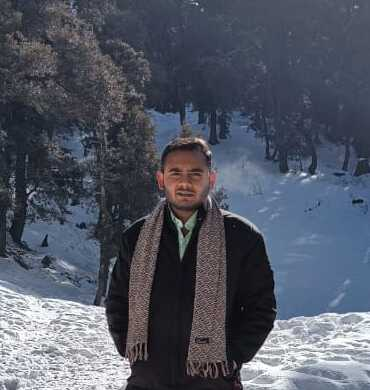

Prakhar Srivastava

Summary
Hey everyone! I am Prakhar Srivastava, a final year student pursuing I.T. engineering from UIET, Panjab University-Chandigarh. I am an aspiring Software Engineer who loves to learn new technologies
Education
- B.E. in Information Technology from UIET, Panjab University (2020-24) - CGPA: 8.62
- Senior Secondary (ISC) from St. Peter's College, Agra (2018-19) - 94.5%
Work Experience
- Content Writing Intern at whizyy.com (Jan,2021-Mar,2021)
- Machine Learning Intern at DIC, Panjab University (June,2022-Aug,2022)
Skills
- C++
- Java
- Python
- JavaScript
- Data Structures
- Algorithms
- Frontend Web Development
- Machine Learning
Achievements
- 3⭐️ on Codechef
- Achieved a Global Rank of 91 in Codechef's May Lunchtime-2022
- Qualified for the 2nd Round of Facebook Hackercup-2022
- I was a part of the team, which was responsible for organizing Techno-Fi, a Technological and Science competition which involves various schools form across the country
- Chosen as the student with the best academic record from Science stream in class 11th
- While in school, I particpated and won various inter-class and inter-school level quiz competitions
Projects
- Brain Tumour Classification using Machine Learning and Deep Learning
- Attendance System using Facial Recognition